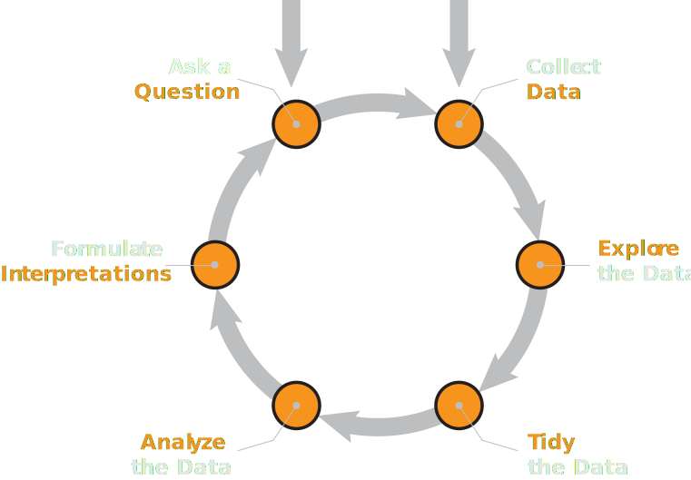

Lecture 02
The Data Science Lifecycle
\[ \newcommand\R{\mathbb{R}} \newcommand{\N}{\mathbb{N}} \newcommand{\E}{\mathbb{E}} \newcommand{\Prob}{\mathbb{P}} \newcommand{\F}{\mathcal{F}} \newcommand{\1}{1\!\!1} \newcommand{\comp}[1]{#1^{\complement}} \newcommand{\Var}{\mathrm{Var}} \newcommand{\SD}{\mathrm{SD}} \newcommand{\vect}[1]{\vec{\boldsymbol{#1}}} \newcommand{\Cov}{\mathrm{Cov}} \usepackage[makeroom]{cancel} \newcommand{\iid}{\stackrel{\mathrm{i.i.d.}}{\sim}} \newcommand{\Lik}{\mathcal{L}} \DeclareMathOperator*{\argmax}{\mathrm{arg max}} \]
What Is Data Science?
Still some debate; there isn’t one single agreed-upon definition.
Most people agree Data Science is Cross-Disciplinary; i.e. it lies at the intersection of many fields.
Often, data scientists are concerned with contributing knowledge by way of combining three things: statistical theory and methodology, with computer science technology, and domain-specific knowledge.
- For example, to make claims about air quality, a data scientist might utilize appropriate statistical methodology in conjunction with sophisticated computer science algorithms, along with specific knowledge from ecology, atmospheric science, anthropology, and potentially many other fields.
Collaborative!
As such, data science is inherently collaborative!
As a Data Scientist, you will very often be working with experts from a variety of different fields (sometimes all at once).
This is true both from an academic standpoint (i.e. if you plan to pursue a data science career in academia) and from an industry standpoint.
This is part of the reason the projects in PSTAT 100 are completed in groups: to give you practice with project management in a group setting.
Data Science Lifecycle

Data Science Lifecycle
- Two possible entry points: with a question or with a data set
- Are you starting your analyses with a specific question in mind? (“How has air quality changed over time?” “What factors affect feline contraction of FIV?” etc.)
- Or, are you starting with a specific dataset you want to explore, from which you will (ultimately) formulate a question of interest?
Data Science Lifecycle
- The exact steps are not that important (and also not fully agreed-upon).
- The main idea is of an iterative process.
- Maybe your data will change the question you ask. Maybe, after a first pass, you will realize you need additional data.